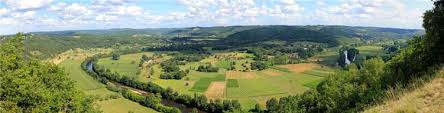
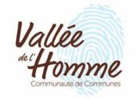
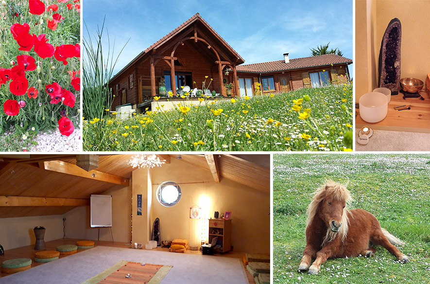

Lieu
Centre d'Expansion de Conscience
CENTRE D'EXPANSION DE CONSCIENCE DE CASTELGIROU
UNE ECOLE DU NOUVEAU MONDE
Face à l'urgence de s'adapter aux nouvelles énergies et à ce nouveau monde que nous sommes venus créer, je vous propose un PROCESSUS DE TRANSMUTATION PROFONDE EN 3 PHASES à partir des modules indépendants suivants :
PHASE D’ÉVEIL A SOI - DÉPLOIEMENT DE LA CONSCIENCE
Etape de « décapage » et de révélation des potentiels de la personnalité.
Un parcours alchimique de redécouverte de vous même et d'ouverture de conscience qui vous prépare à votre nouvelle vie.
PHASE D’ÉVEIL QUANTIQUE - OUVERTURE DU CHAMP DES POSSIBLES
Processus d’activation des champs de conscience via le cœur et de construction du corps de lumière qui vous place dans votre mission de vie
La personnalité évolue alors dans son excellence et se découvre plus sereine car plus consciente. > EN SAVOIR PLUSPHASE D’ÉVEIL ASCENSIONNEL & MULTIDIMENSIONNEL
Révélation de votre Être qui vous conduit à la rencontre de votre Être Supérieur ( Présence "JE SUIS").
Intégrer Volonté et Sagesse donne accès progressivement à un État d’Être permettant de déployer votre conscience vers la 4D/5D et de devenir créateur de votre vie en pleine conscience > EN SAVOIR PLUSCASTELGIROU : UN LIEU D’ÉVEIL DE LA CONSCIENCE
En 2008, j’ai été amenée à changer de vie et de région et suis arrivée "par hasard" à Plazac dans le Périgord au lieu-dit « CASTELGIROU » littéralement “Château du sens”.Un lieu amplificateur d'ouverture de conscience et d'éveil
Construit en résonance avec ces nouvelles énergies, Castelgirou se situe sur un lieu porteur de courants énergétiques et telluriques spécifiques. Plazac est un village de 700 habitants avec 30 nationalités différentes, où les échanges et la mixité de cultures favorisent les nouvelles idées. > Plus d'informations sur Plazac (youtube - Interview FRANCE 3 Nouvelle Aquitaine du 4/12/2018) Ce coin du Périgord noir est chargé d’histoire : Reconnu comme étant le berceau de l’humanité avec ses sites troglodytes et sa grotte de Lascaux, il est ensemencé depuis plus de 40 ans d’énergies bouddhiques et christiques.
La présence de nombreux centres bouddhistes, de lamas et d’un vortex correspondant au chakra du cœur de la France pour certains et au 12ème vortex de la Terre pour d’autres, en font un havre de paix. « S’installer là où la rivière fait le serpent » Thich Na Tang. Ce fut fait sur la cote de Jor, en face Castelgirou. La « vallée de la Licorne » située à un centaine de mètres de Castelgirou attire depuis une trentaine d’années de nombreux artistes, peintres, musiciens, écrivains, philosophes, médecins spécialisés, thérapeutes holistiques et quantiques, managers hors norme, cinéastes…. bref des chercheurs en quête de nouveautés. > Plus d'informations sur le DVD Les Acteurs de la Vie (2016)
Certains désignent l'esprit directeur de La Dordogne comme la Terre de reconnexion et de retrouvailles d’Âmes. Plazac, village de la « Vallée de l’homme », semble appeler les Êtres mais surtout les Âmes à venir se concerter et réfléchir à une nouvelle façon de penser, de méditer, de vivre. Y verrait-on le signe d’un creuset pour la nouvelle humanité ?« Montrer l’exemple n’est pas la meilleure façon de convaincre, c’est la seule ! » Gandhi
Un lieu connecté à la 5ème Dimension et au Mont Shasta
Bâti sous guidance et dédié aux énergies de 5D du MONT SHASTA, ce lieu accueillent des petits groupes d'Ames désireuses de transformation profonde et d'éveil. Un poney vient à votre rencontre.
PLAZAC ET SES CAPACITÉS D'ACCUEIL - Village touristique, l'hébergement sur site est varié
- Nombreux gites sur place et avoisinants – Me contacter au 06.80.42.85.91
- Centre d'accueil et maison d'Hôtes TERRE DE JOR – www.terredejor.fr – Tél: 05.53.50.57.01 (situé à 500m de Castelgirou)